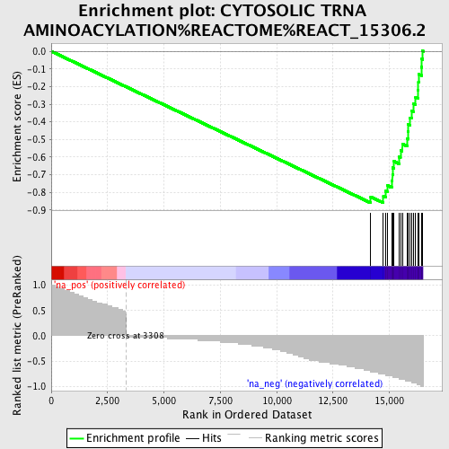
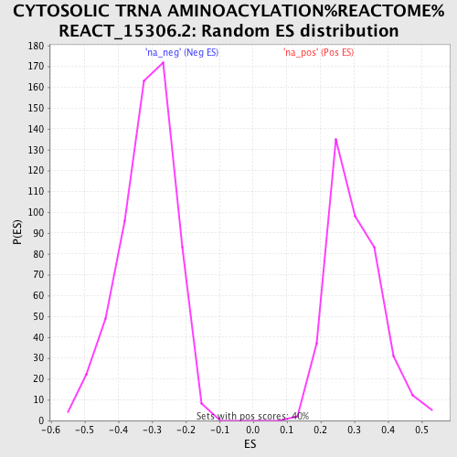

| | | Dataset | Adult_GallBladder |
| Phenotype | NoPhenotypeAvailable |
| Upregulated in class | na_neg |
| GeneSet | CYTOSOLIC TRNA AMINOACYLATION%REACTOME%REACT_15306.2 |
| Enrichment Score (ES) | -0.8602379 |
| Normalized Enrichment Score (NES) | -2.7347457 |
| Nominal p-value | 0.0 |
| FDR q-value | 0.0 |
| FWER p-Value | 0.0 |
Table: GSEA Results Summary

Fig 1: Enrichment plot: CYTOSOLIC TRNA AMINOACYLATION%REACTOME%REACT_15306.2
Profile of the Running ES Score & Positions of GeneSet Members on the Rank Ordered List
| PROBE | GENE SYMBOL | GENE_TITLE | RANK IN GENE LIST | RANK METRIC SCORE | RUNNING ES | CORE ENRICHMENT | | 1 | AARS | | | 14175 | -0.724 | -0.8259 | Yes |
| 2 | PPA1 | | | 14736 | -0.759 | -0.8240 | Yes |
| 3 | YARS | | | 14833 | -0.759 | -0.7938 | Yes |
| 4 | DARS | | | 14907 | -0.793 | -0.7607 | Yes |
| 5 | TARS | | | 15102 | -0.793 | -0.7349 | Yes |
| 6 | VARS | | | 15135 | -0.793 | -0.6992 | Yes |
| 7 | AIMP2 | | | 15146 | -0.828 | -0.6606 | Yes |
| 8 | EPRS | | | 15210 | -0.828 | -0.6252 | Yes |
| 9 | WARS | | | 15441 | -0.828 | -0.6000 | Yes |
| 10 | CARS | | | 15495 | -0.862 | -0.5623 | Yes |
| 11 | KARS | | | 15573 | -0.862 | -0.5262 | Yes |
| 12 | EEF1E1 | | | 15792 | -0.897 | -0.4969 | Yes |
| 13 | IARS | | | 15822 | -0.897 | -0.4562 | Yes |
| 14 | LARS | | | 15834 | -0.897 | -0.4144 | Yes |
| 15 | QARS | | | 15910 | -0.897 | -0.3764 | Yes |
| 16 | AIMP1 | | | 15988 | -0.931 | -0.3370 | Yes |
| 17 | GARS | | | 16064 | -0.931 | -0.2974 | Yes |
| 18 | SARS | | | 16164 | -0.931 | -0.2593 | Yes |
| 19 | FARSB | | | 16283 | -0.966 | -0.2207 | Yes |
| 20 | HARS | | | 16290 | -0.966 | -0.1753 | Yes |
| 21 | NARS | | | 16317 | -0.966 | -0.1312 | Yes |
| 22 | FARSA | | | 16420 | -1.000 | -0.0900 | Yes |
| 23 | MARS | | | 16443 | -1.000 | -0.0439 | Yes |
| 24 | RARS | | | 16479 | -1.000 | 0.0013 | Yes |
Table: GSEA details [plain text format]

Fig 2: CYTOSOLIC TRNA AMINOACYLATION%REACTOME%REACT_15306.2: Random ES distribution
Gene set null distribution of ES for CYTOSOLIC TRNA AMINOACYLATION%REACTOME%REACT_15306.2